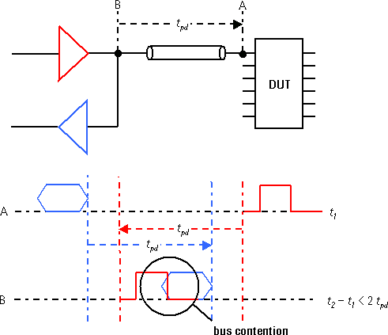

Trace length equalization
Time domain reflectometry
The electrical length of all signal lines between the test head digital card and the device pins is measured automatically by the V93000 using time domain reflectometry (TDR). These values are used to adjust the per-pin timing so that differences in signal lengths do not require additional compensation. Trace length differences on the DUT boards or wafer probe cards, up to the round trip delay of the signal or 50 ns, (whichever time is shorter) will not affect the timing accuracy of the test system.
The V93000 cannot compensate for trace length mismatches between individual traces used as part of a differential pair.
Analog, and RF test head electronics do not possess TDR capabilities. Therefore, when designing DUT boards that use these resources, trace length matching will be required if the DUT signal integrity demands coincident signal edges.
It is important to maintain the 50 Ω environment in the DUT board design, as the test system driver, receiver, and DUT operate in a 50 Ω environment, regardless of how long the connecting traces are. Keep the traces as short as possible to minimize losses and rise-time degradation.
For typical trace capacitances of 100 to 200 pF/m, trace length differences are negligible for PMU or Iddq measurements.
If you use the DUT interface of the Twinning solution you will have to take into account the additional signal path of 80 mm (3.15 in) of the pogo pin connection between family board and DUT daughter board, and the related impedance Z. This pogo pin trace is unshielded.
Round-trip time
For bidirectional pins such as data bus pins, total I/O round trip time of the signal from the I/O board to the DUT pin and back becomes relevant. At high vector rates, the signal direction changes so frequently that the signals being sent by the test system may collide with data being sent by the DUT. The figure below illustrates the collision of data, or bus contention.

As a rule of thumb, you only need to consider round trip time as a potential problem if the switching period of the I/O pin is less than double the propagation delay of the signal path between the test system I/O channel and the DUT pin.
Make sure that pins with critical bus signal protocols have the shortest possible trace length. Depending on the positioning of the DUT contactor, you might need to follow specific routing rules for the traces of these bus pins.
If you require very fast vector rates in I/O mode, possible techniques to employ are the use of dual transmission lines, or the introduction of extra dummy cycles in your test. You will need to modify your vector files when using these techniques.
Reducing round-trip time
Position the DUT in the device area so as to shorten the paths to bidirectional pins (even if this results in longer paths to unidirectional pins). This means the device side where I/O pins are located should be close to DUT board pogo pin pads. (The extra length of paths needed for I or O pins will be compensated for by adjusting pin attribute delay settings or by fixture calibration.)
Specify the use of high-speed DUT board material to the custom DUT board manufacturer. For instance, teflon has better high-speed characteristics than epoxy.
Functional changes
- Introduced before SmarTest 6.3.2